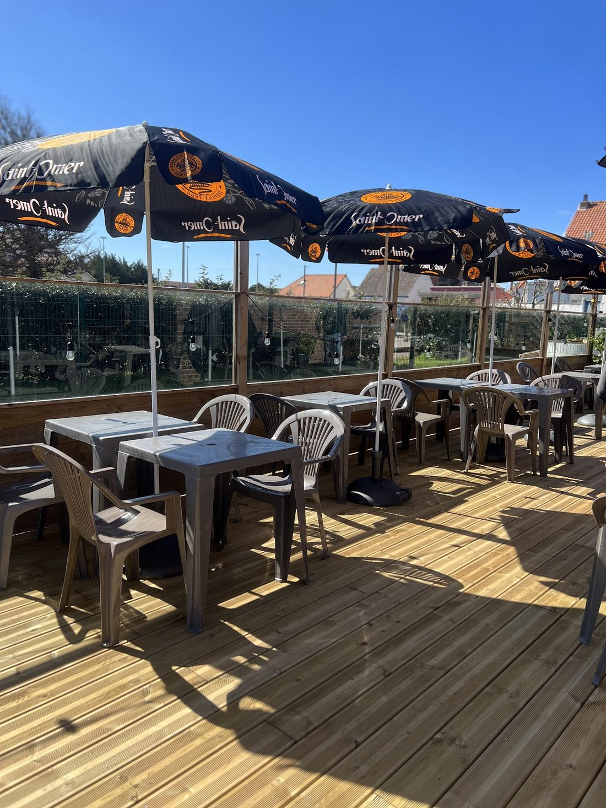

Merlimont-Plage
Sur l'avenue de la Plage, tout près du mini-golf de Merlimont-Plage.
Réservation par téléphone.
À emporter : le midi dès 12 h, le soir dès 19 h.

Sur place
Deux terrasses, dont une plein sud, et une salle chaleureuse pour l'hiver. Des soirées à thème tout au long de l'année, annoncées sur la page Facebook.
Paiement